hi!
sometimes you have some cool data
and you want to put it on a map
this is my story
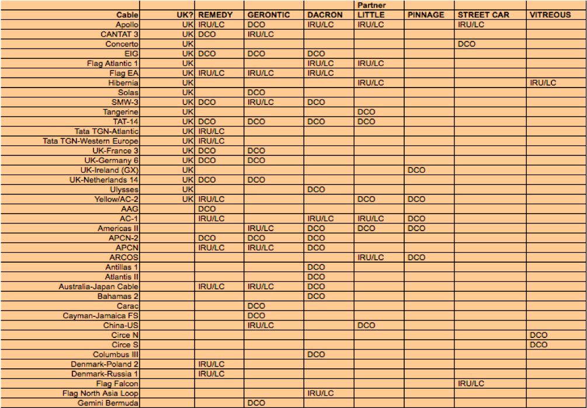
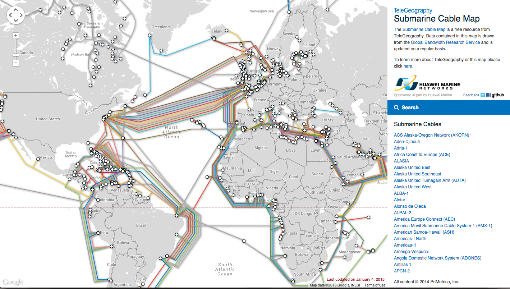
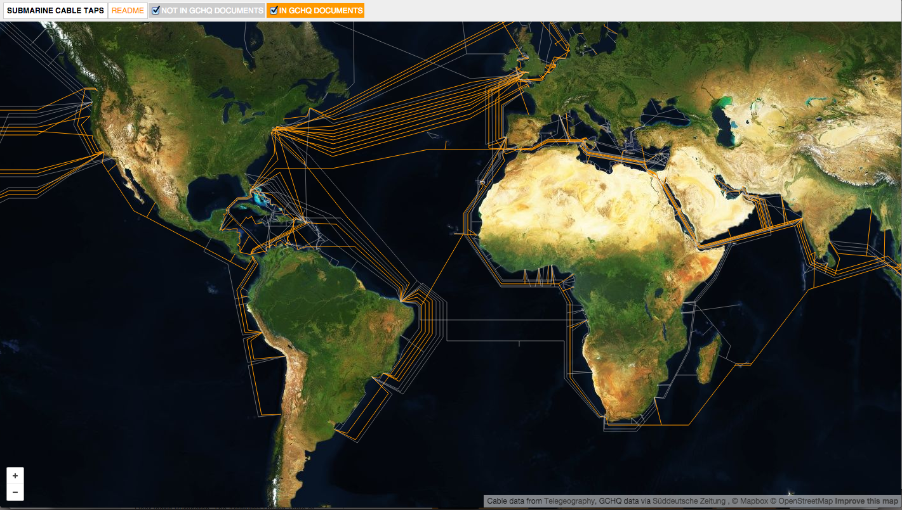
1. an image file PDF → json
2. a KML file → geojson
3. smashy smash magick
basically
a table join
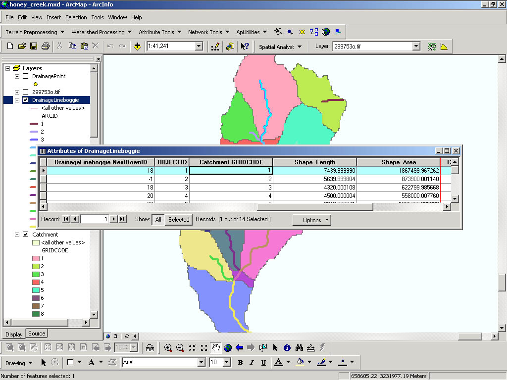
but in json
because we can
4. put it on a map
json and the argonauts
java
script
object
notation
omg geojson
assumptions
the command line is your friend
required:
node
optional:
pip
ogr2ogr
an image file PDF → json
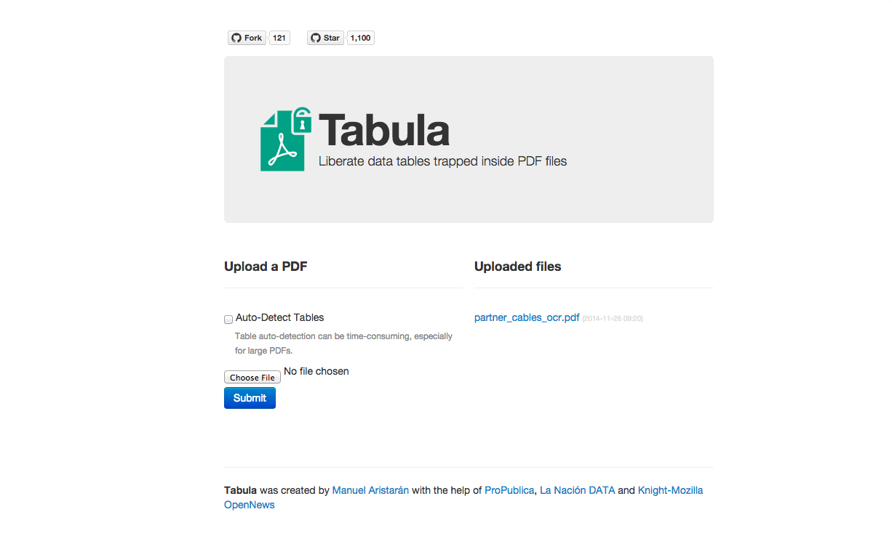
a KML file → geojson
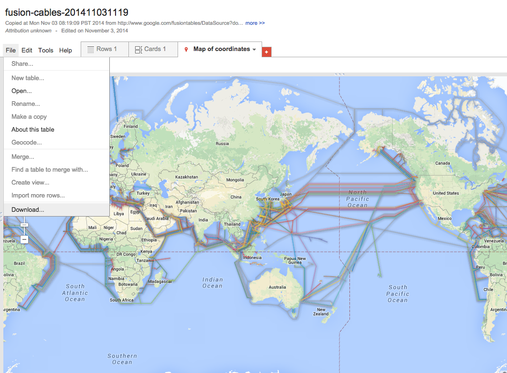
smashy smash magick
90% of the time
when you have a code problem
someone wrote a node module for it
75% of the time
someone you know made the module
thanks, keller
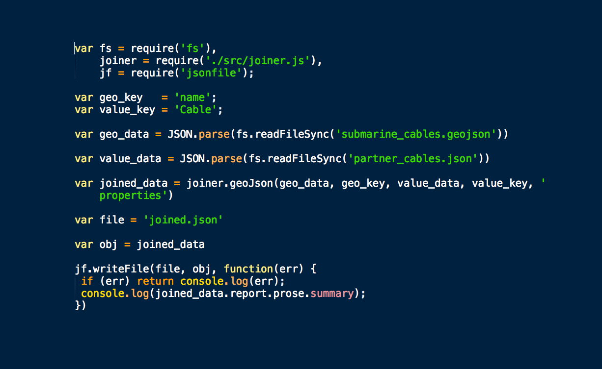
npm install
node join.js
OMG
output json → geojson
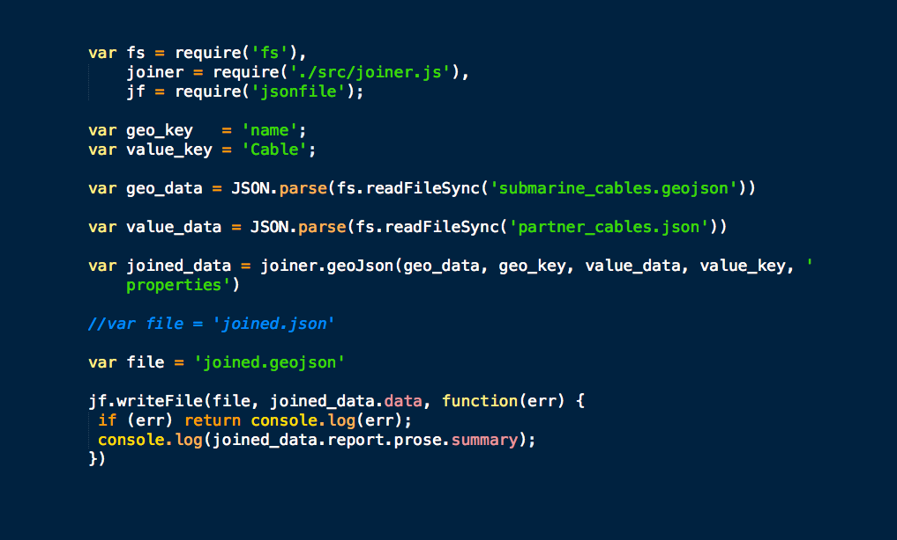
put it on a map
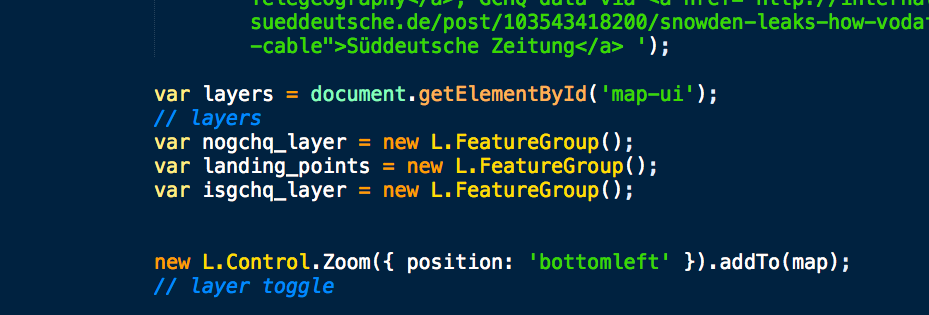
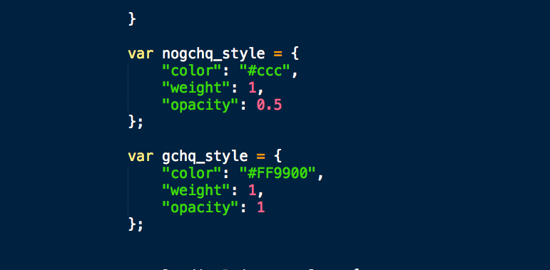
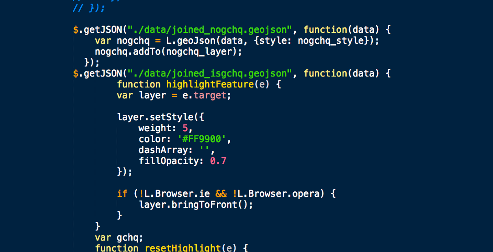
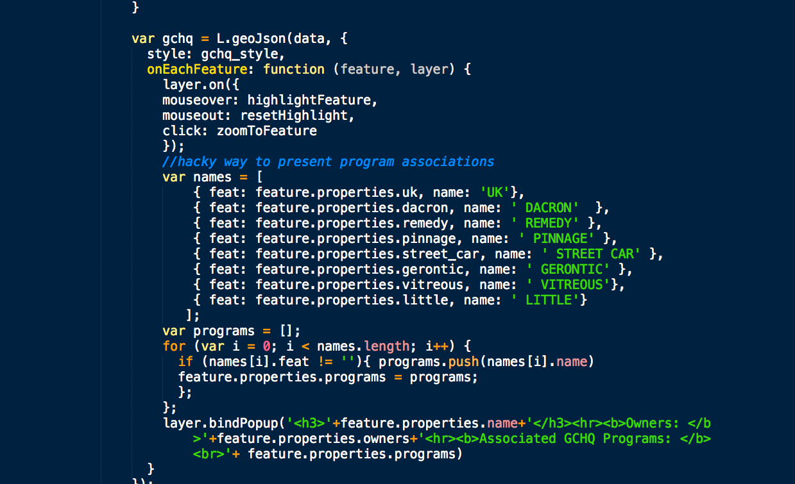
list of tools used: